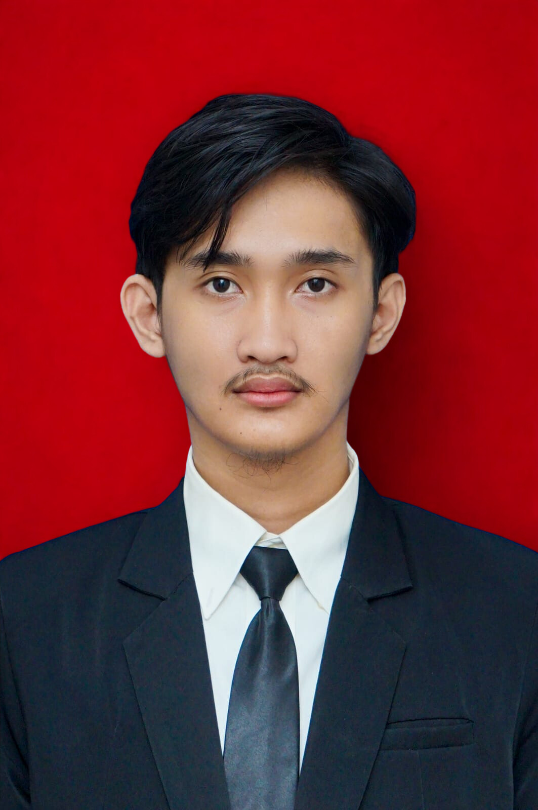

Visi untuk pendidikan Indonesia
Mewujudkan pendidikan yang memerdekakan, inklusif, dan relevan dengan kodrat alam serta kodrat zaman; pendidikan yang memberi setiap anak ruang untuk tumbuh sesuai potensi dan kebutuhannya.
Seminar Pendidikan Profesi Guru · 2026
Catatan perjalanan reflektif Fadhlan Manggara Dwi Tama dalam membangun pembelajaran sekolah dasar yang bermakna, adaptif, dan berpihak pada peserta didik.

01 · Identifikasi diri
Tiga pertanyaan pemantik dalam panduan Seminar PPG menjadi kompas perjalanan profesional saya.
Mewujudkan pendidikan yang memerdekakan, inklusif, dan relevan dengan kodrat alam serta kodrat zaman; pendidikan yang memberi setiap anak ruang untuk tumbuh sesuai potensi dan kebutuhannya.
Menjadi guru sekolah dasar yang profesional, reflektif, adaptif, dan berpihak pada peserta didik—hadir sebagai pamong yang menuntun, bukan sekadar menyampaikan pengetahuan.
Terus belajar berbasis data, mengenali karakter peserta didik, merancang pembelajaran berdiferensiasi, memanfaatkan teknologi secara bijak, dan memperbaiki praktik melalui refleksi serta kolaborasi.
Profil singkat
Mahasiswa PPG Prajabatan PGSD yang tertarik pada inovasi pembelajaran dan pemanfaatan teknologi untuk pengalaman belajar bermakna.
02 · Refleksi pengalaman belajar
Setiap refleksi disusun melalui Connection, Challenge, Concept, dan Change. Pilih mata kuliah untuk membaca ringkasannya.
03 · Refleksi PPG keseluruhan
Rangkuman manfaat program, perubahan paradigma, dan arah tindak lanjut profesional.
Yang saya capai
PPG memperkuat kemampuan saya membaca kebutuhan peserta didik, merancang pembelajaran secara terarah, menggunakan asesmen sebagai dasar keputusan, dan memandang refleksi sebagai bagian dari tanggung jawab profesional.
“Pendidikan seharusnya tidak menyeragamkan, melainkan menuntun setiap anak bertumbuh melalui pengalaman yang berkesadaran, bermakna, dan menggembirakan.”
Paradigma baru tentang pendidikan
Rencana tindak lanjut
Melakukan asesmen diagnostik dan membangun profil belajar peserta didik.
Mengembangkan pembelajaran berdiferensiasi dengan media konkret dan digital yang relevan.
Mendokumentasikan bukti belajar, meminta umpan balik, dan memperbaiki praktik.
04 · Karya inovasi pendidikan
Bagian ini mengikuti indikator rubrik: masalah, gagasan, implementasi, efektivitas, dan evaluasi.
Dokumentasi produk akan ditampilkan di sini.
Satu karya yang berasal dari refleksi paling bermakna akan dipaparkan secara utuh, bukan hanya sebagai galeri hasil akhir.
Belum ada data karya inovasi pada situs awal. Konten ini sengaja tidak diisi dengan informasi rekaan.
05 · Artefak & bukti dukung
Setiap klaim reflektif perlu terhubung dengan artefak relevan dan penjelasan bagian yang mendukung refleksi.
Tempat untuk modul ajar, instrumen asesmen, dan contoh umpan balik.
Tempat untuk foto/video kegiatan dan uraian konteks pelaksanaan.
Tempat untuk LK refleksi, masukan dosen/guru pamong, dan tindak lanjut.